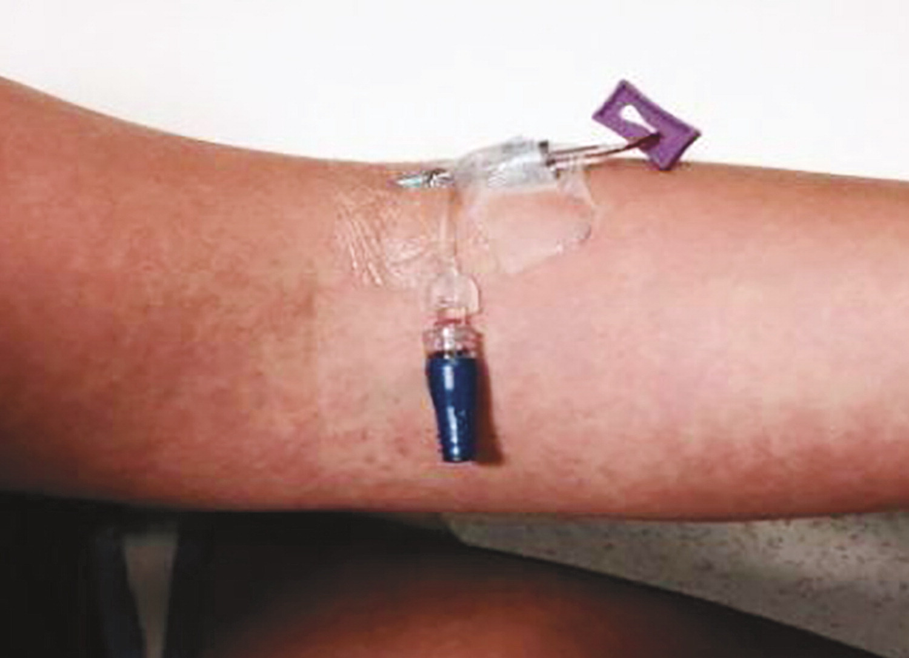
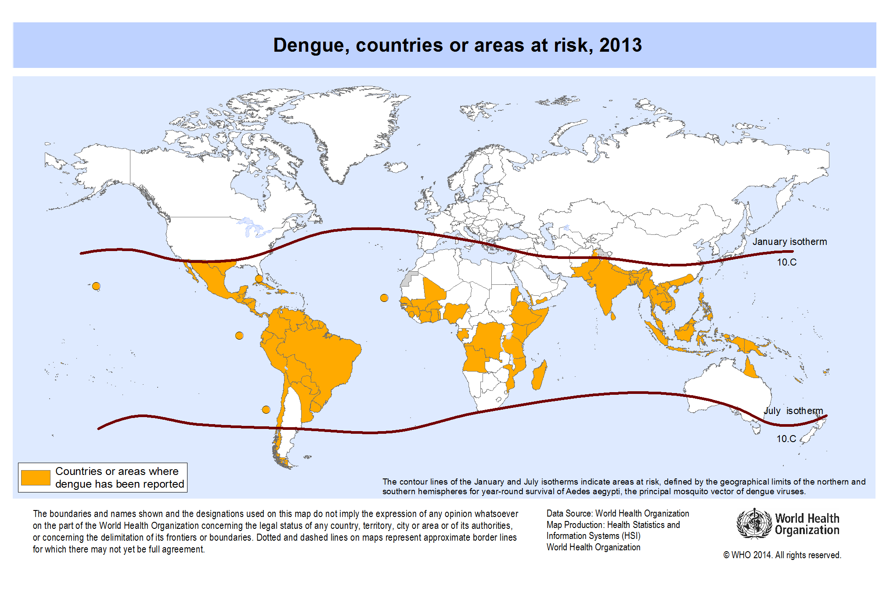
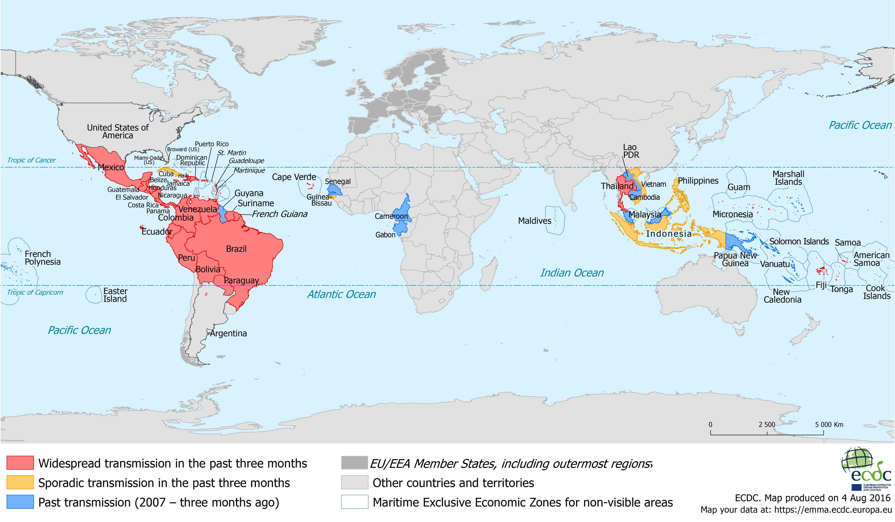

Tropical Flavivirus Infections
Austin Meyer, PhD
MS4
Roadmap - Hopefully short and sweet
- Canadian woman who doesn't have Snowshoe Hare virus
- American women just gets back from Brazil
- An American woman is misdiagnosed with flu in Boston
- A German who had a bad outcome
Case #1
Initial presentation
A 26 y/o presented to the ED in Toronto in early September with fever, myalgia, and headache. Headache started 3 days earlier. It was intermittent and was accompanied by some mild diplopia. She vomited twice yesterday and had no other GI symptoms.
She recently returned from a trip to Thailand where she had bloody diarrhea about two weeks ago that resolved in a day with administration of an unknown antibiotic. Her trip was last minute and she did not consult a travel clinic. She had not traveled abroad previously. Most of her time in country was spent trekking through the forests and rice field areas.
Histories
- No PMH
- No PSH
- No Meds
- No allergies
Objective information
On admission
- PE: WNL
- Labs: WBC = 12.3, Na = 124, Everything else WNL
- Micro: Thick and thin smears negative
On 2nd day post-admission
- Diminished consciousness
- Neck stiffness
- Drooling
- Lower extremity stiffness
Objective information
- Blood:
- Negative for CHIKV, rabies, herpes B, Snowshoe hare virus
- Positive for Dengue IgM, WNV (1:10 titer)
- LP: Leuks = 218, PMN = 52%, Protein = 82 mg/dL, Glucose = 78 mg/dL
- PCR: Negative for bacterial, fungal, mycobacterial, HSV, EBV, WNV, adenovirus, and enterovirus
- Rectal Swab: Positive for Salmonella paratyphi B
- MRI: Normal
What does she have?
JEV is found largely in the East Asia

Epidemiology of JEV
- Initial presentation is sometimes confused with polio
- Early symptoms resemble flu-like illness--fever, headache, lethergy, nausea, vomiting--and advances to florid encephalitis
First discovered in 1934, but summertime outbreaks with thousands of cases were described previously as Japanese B encephalitis
Reported cases are vastly underreporting based on serological surveys
- Approximately 35,000 - 50,000 cases and 10,000 - 15,000 deaths are reported annually
- This is the most commonly reported encephalitis virus worldwide
"More than 99% of infections with JEV are subclinical; consequently, in areas with endemic transmission, infections acquired naturally at an early age result in immunity in more than 80% of young adults." (Mandell 8e)
"In an era in which polio has declined to the point of eradication, JE is now preeminent among causes of pediatric CNS infections in the region." (Mandell's 8e)
Diagnosis, treatment and prevention of JEV
Diagnosis is best with a PCR panel on blood (true for most flaviviruses)
- Isolation from CSF is often unsuccessful but is useful during fulminant disease
- There is a lot of overlap in arbo-flavivirus serologies
No specific treatment
- Supportive care should focus on the electrolyte abnormalities that lead to seizures
Vaccine is available in the US by brand name Ixiaro
- Approved in those 2 months and up (doses change with age)
- Primary series is 2 IM injections 28 days apart (plan ahead)
- This is an inactivated vaccine
- No clinical efficacy data is available
- However, other vaccines licensed in the endemic have shown dramatic reductions in infection rates
Case #2
Initial presentation
A 47 y/o American woman presents to the ED two days after returning from a trip to Sao Paulo, Brazil with her 13 y/o son. Three days ago she began feeling acutely ill with high fever, chill, frontal headache, back pain, and muscle pain. The next day she boarded a direct flight to Chicago. During the flight, she felt weak and developed a sore throat. Yesterday, she developed non-bloody diarrhea with nausea.
Since symptom onset she has been receiving amoxicillin and acetaminophen.
On physical exam, she is in acute distress. No signs of bleeding and a normal neuro exam.
Vitals are temperature of 35.6C, HR 60, BP 120/80
What do we think she has?
More information
CBC and CMP
- Platelets = 98K, WBC = 4K
- Cr = 6.9, BUN = 151, Alk Phos = 228
Liver Function
- ALT/AST = 23K/49K
- Tbili = 3.5
- Dbili = 2.6
Coagulation studies
- PT = 26% normal
- INR = 3.3
- CRP = 13.8
What do we think she has?
The next day her eye looks like this

YF is found largely in S. America and Africa

Epidemiology and diagnosis of YF
Has been around a long time; at least until 1600s
- Relatively easy to spot... hence the yellow
Can occur many times annually as discrete sporadic outbreaks
- Modelling suggests around 50 countries affected and about 100,000 severe cases annually
- Unknown burden of mild disease
- Currently there is an outbreak in Brazil
- An outbreak in Angola and Uganda just stopped last semester
Approximately 200,000 cases annually
- Survives the dry season in mosquito eggs
Clinical disease from YF
Initial infection
- 5% to 50% of infections are asymptomatic
- Incubation time of 3-6 days
- Begins with fever, headache, and myalgias
- Relatively mild initial disease with some conjunctival injections, facial flushing and bradycardia
Some patients progress to fulminant hemorrhagic fever or hepatorenal dysfunction
It may be easiest to distinguish this as hepatitis + hemorrhagic fever, but that occurs in a minority of patients
Albuminuria can usually distinguish YF from other types of hepatitis
Diagnosis, treatment and prevention of YF
Can diagnosis serologically but it is rife with issues
- Lots of cross-reactivity
- Vaccination status can make IgM positive
- In first several days, PCR can be successful, but by the time the fulminant symptoms appear the virus is typically undetectable
No specific treatment
- Avoid aspirin and NSAIDS
- Protect patient from mosquito exposure for 5 days after onset
Vaccine is available
- Approved for 9 months and older
- Live-attenuated vaccine (Check contraindications)
Case #3
HPI
A 27-year-old woman was seen in the emergency department of this hospital during the summer because of myalgias and a rash. She had just returned from a trip to Turks and Caicos.
The patient had been well until 5 days before this evaluation, when myalgias in her legs and shoulders developed, along with back pain, neck pain, and a retro-orbital headache.
Later that day, fever occurred (temperature, 39.0°C) and was accompanied by chills, nausea, decreased appetite, and sore throat. She also noted a vaginal ulcer, ulcers on the side of her tongue, decreased taste sensation, and enlarged, tender lymph nodes in her neck and groin.
The next morning, the patient awoke with a rash on her right forearm. The lesions were pink, pruritic, and nonpainful. Within 1 hour, the rash spread to her torso and both arms and legs.
Her gums bled easily when she brushed her teeth, but the rash remitted.
On the fifth day of illness, a new pruritic, erythematous rash developed, beginning on her palms and spreading to her arms, chest, abdomen, back, and legs, sparing the soles of her feet.
Objective information
The patient appeared well. The temperature was 36.4°C, the pulse 69 beats per minute, the blood pressure 135/87 mm Hg, the respiratory rate 18 breaths per minute, and the oxygen saturation 98% while she was breathing ambient air.
There was subtle swelling of soft tissue in the hands but no joint effusions.
Tourniquet test was positive
What do we have in the differential?
Rash spared the palm and soles

Dengue is found everywhere JEV or YF is found

Epidemiology and diagnosis of Dengue
Four different types
In susceptible populations, attack rate can approach 50-70%
Interesting decline of DHF in infants as they age out of passive immunity from mother
Prior infections potentiate DHF by a complicated mechanism
Again most infections are subclinic
Clinical diagnosis is unlikely
- Best chance is to find Leukopenia, Thrombocytopenia, Neutropenia, and Mild AST/ALT elevation
PCR is prefered in first 5 days of symptoms
- IgM/IgG/NS1 are all used but have significant drawbacks
- As before IgM has substantial overlap with JEV
CDC diagnostic algorithm
Treatment and prevention of Dengue
In general, even a patient with DHF should not die
- Appropriate supportive care reduces mortality 50 to 100 fold
If they die one of two things likely happened
- They presented way too late
- Healthcare providers fluid overloaded them
IVIg has not been shown to provide benefit
- Corticosteroids provide no benefit
Vaccines
- One licensed in Mexico; Dengvaxia
- Many others in development
- Connection between cross-reactivity and DHF not well established
Case #4
Presentation and workup
A 45-year-old woman was seen in an outpatient clinic in Heidelberg, Germany for fever of up to 39°C and rash covering her trunk, arms, and legs.
Fever had started on 2 days previously, which was 6 days after she had returned from a 3-week vacation to peninsular Malaysia and Sabah, Malaysian Borneo.
Laboratory analyses showed a slightly elevated C-reactive protein level of 5.2 mg/L (reference range <5.0), but liver function test and complete blood count results were within reference range.
During the next 3 days, the fever subsided, but the patient experienced a sore throat, bilateral conjunctivitis, and a burning sensation of the palms and soles. These symptoms were accompanied by swelling of the hands and increasing arthralgia of the wrists, palms, and fingers. There was no lymphadenopathy.
Two days later, the patient experienced sudden bilateral dull and metallic hearing; in her left ear, she experienced a very short delay between a sound and her perception of the sound.
What do we have in the differential?
What does she have?
Zika is not found in Africa, in general

Zika is transmitted through most body fluids
Disease and epidemiology
Disease
- Mild fever, skin rash, conjunctivitis, muscle and joint pain, malaise or headache. These symptoms normally last for 2-7 days.
Epidemiology
- 223 Cases in US due to local transmission
- First case of local transmission in Texas occured in Brownsville in November
- 36,383 in US territories due to local transmission (325 from viremic blood donors)
- In November, WHO accepted that this was likely uncontrollable
- Currently, 84 countries have local transmission
Diagnosis
Diagnosis
- First 14 days, try nucleic acid tests on serum
- First 14 days, should always test urine with nucleic acid test
- A positive nucleic acid test is confirmatory
- A negative nucleic acid test does not rule out infection
- A Zika IgM should be sent, if NAT is negative
- IgM is postive from 4 to 90 days post infection
- Congenital versus early infancy diagnosis is complicated and often wrong
In summary: Testing is a nightmare, contact the state health department and CDC if you are concerned
Treatment and prevention of Zika
No specific treatment
- Rarely an issue for adults
- Generally, only a problem for neurotropic effects in utero
- Many vaccines are in development
For reproductive age people, there is extensive guidance
- First virus since Rubella that causes cogenital deformities
- Risk of microcephaly with first trimester is likely around 1% but could be higher
- https://www.cdc.gov/zika/geo/countries-territories.html
Other flaviviruses
Non-tropical flaviviruses
Hepatitis C Virus... should be comfortable here
St. Louis Encephalitis
- Mostly around bird reservoirs
West Nile Virus
- Could be tropical or not
Omsk Virus
- Found only in Russia
Tick-borne Encephalitis
- Many different viruses fall in here
Kyasanur Forest disease virus
- There is actually a vaccine for this